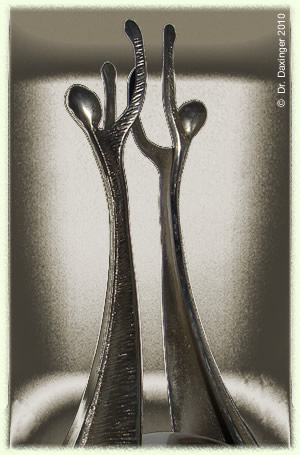

Leitbild
Wegbereiter und -begleiter für Ihre raumbezogenen Projekte.

Leitbild
Ihr Partner für raumbezogene Daten
Wir verstehen uns als Dienstleister in Zusammenhang mit raumbezogenen Daten; unser Fachwissen im Umgang mit Geodaten soll unsere Kunden bei der Realisierung Ihrer Projekte unterstützen, Risiken minimieren, Abläufe optimieren und Nachhaltigkeit gewährleisten.
Die Ziele werden gemeinsam definiert und unser Beitrag zur Umsetzung wird vorab festgelegt. Dabei entscheidet der Kunde, ob unsere Mitarbeit punktuell verläuft, oder ob wir fachübergreifend Koordinationsschritte setzen.
Im Zentrum steht die Zielvorstellung des Kunden – wir sind Wegbereiter und -begleiter in diesem Prozess.